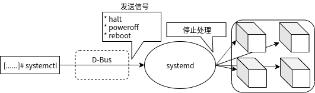

2.4 重新启动和停止系统¶
设置和服务分组的目标¶
目标系统设置和服务管理，包括挂载文件系统、启动网络、启动桌面环境以及启动Web服务器。
系统的重新启动和停止也是目标之一。
目标 |
说明 |
SysV级别 |
|---|---|---|
halt.target |
停止 |
— |
poweroff.target |
关闭电源 |
0 |
reboot.target |
重启 |
6 |
通过改变目标进行重启和停止¶
目标更改（如重新启动和停止系统）可通过systemctl命令完成。
您可以再参数中指定子命令和目标，以及仅指定子命令的方式。此外，您还可以使用比systemd早的SysVinit命令init、halt、poweroff和reboot。
操作 |
命令（指定目标） |
命令（仅使用子命令） |
SysV init 兼容命令 |
|---|---|---|---|
停止 |
systemctl isolate halt.target |
systemctl halt |
halt |
关闭电源 |
systemctl isolate poweroff.target |
systemctl poweroff |
poweroff、init 0 |
重启 |
systemctl isolate reboot.target |
systemctl reboot |
reboot、init 6 |
运行上述systemctl命令时，systemctl通过D-Bus想systemd发送消息“halt”、“poweroff”、“reboot”。接收到信息的systemd并列进行各单位的停止处理，在其中依赖关系的单元按照与启动时相反的顺序停止。
# systemctl halt
# systemctl poweroff
# systemctl reboot
除了systemctl命令之外，init命令等“SysV init”中提供的停止和管理再启动的命令，也可以在systemd的环境下以同样的方式使用。
init命令¶
init命令与以下介绍的其他停止/重启指令不同，是向systemd的同步链接。不通过D-Bus，直接执行systemd。
命令名作为“init”被启动，并且PID不是“1”的情况，init的符号前面的systemd，systemctl命令作为“init自变量”执行。通过在参数中指定级别“0”，可以通过指定电源关闭“6”进行重新启动。
# init 0 ➜ 关闭电源
# init 6 ➜ 重启
除init以外的SysV init兼容命令¶
systemd守护进程的符号链接的init以外，表2-4-3的命令全部/bin/systemctl命令的符号链接。
当调用指向符号链接的systemctl时，systemctl将确定调用的命令名称并进行处理。
命令 |
说明 |
|---|---|
shutdown |
停止计算机，关闭电源，重新启动 |
telinit |
更改运行级别 |
halt |
停止计算机 |
poweroff |
关闭计算机的电源 |
reboot |
重新启动计算机 |
runlevel |
显示前一个和现在的运行水平 |
关闭电源¶
通过shutdown命令，您可以关闭机器的电源。
shutdown [选项] [停止时间] [wall消息]
可以通过指定“-r”选项重新启动。
停止时间根据“hh:mm”的24小时形式的“时间:分钟”的指定，“m”从现在时刻开始的分单位的指定，“now”或“0”的即刻停止的指定。如果没有指定停止时间，则默认值为1分钟。
例① 10分钟后停止：shutdown +10
例② 即刻停止：shutdown +0 或 showdown now
例③ 1分钟后停止：shutdown 或 shutdown +1
指定停止时间时，systemd-shutdownd守护进程启动，进行系统停止的惊吓。5分钟以内的shutdown被调度后，自动制作/run/nologin hill，不能进行root以外的登录。
您还可以指定要发送到所有已登录的用户的wall信息。如果未指定任何消息，则会发送默认信息。
选项 |
说明 |
|---|---|
-H、–halt |
停止计算机 |
-P、–poweroff |
关闭计算机的电源（缺省） |
-r、–reboot |
重启计算机 |
-h |
与–poweroff相同，除非指定了–halt |
-k |
不执行halt、poweroff、reboot，只发送wall信息 |
–no-wall |
在halt、poweroff和reboot执行前不发送wall消息 |
-c |
取消关闭 |
下面的示例显示一条消息，表示一分钟后断电。连续运行date和shutdown命令，以确定命令运行时间和停止时间之间的间隔。
# date ; shutdown
2019年 11月 28日 星期四 18:29:28 CST
Shutdown scheduled for Thu 2019-11-28 18:30:28 CST, use 'shutdown -c' to cancel.
下面的示例中，由于即刻停止而不显示信息，立即停止，关闭电源。
# shutdown now
注解
如果连续运行多个命令，请使用“;”（分号）连接命令，如“date;shutdown”
关闭和重启计算机¶
halt命令进行计算机的停止，poweroff命令进行电源的关闭，reboot命令进行重启。
halt [参数]
poweroff [参数]
reboot [参数]
选项 |
说明 |
|---|---|
–halt |
halt、poweroff、reboot在任何情况下都关机 |
-p、–poweroff |
halt、poweroff、reboot在任何情况下都关闭电源 |
–reboot |
halt、poweroff、reboot在任何情况下都重启 |
-f、–force |
不调用systemd，立即执行 |
halt、poweroff和reboot命令都提供了-f选项。使用这个选项时，通过sync的运行可以保持文件系统的一致性，但是由于不执行位于systemd的停止顺序，所以有一部分数据丢失的危险。通常是应避免使用的选项，但希望再不等待每个服务结束的情况下立即停止系统的场景中使用。
sync(synchronize：取得同步)是将保存再内存中的文件系统数据的改写写到磁盘上的系统调用。也提供了执行sync系统调用的sync文字。
# reboot -f
Rebooting.
# halt -f
Halting.
# halt -fp
Powering off.
级别的表示和转移¶
runlevel命令显示前一个运行的级别和当前运行的级别。
# runlevel
3 5
上面示例中表示当前运行的运行级别为“5”，且之前的运行级别的级别为“3”。
telinit命令是在自定义变量中SysV运行级别，转移到指定的运行级别的画面。这是只为了兼容性而保留的命令。
telinit [选项] 运行级别
# telinit 0